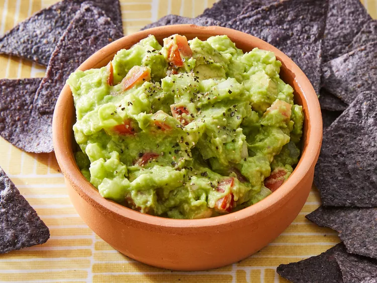

Home
Guacamole Recipe

Description
This easy guacamole recipe is quick and simple to make. Great with tortilla chips or as a topping for Mexican foods!
Ingredients
- Avocados
- Onions
- tomatoes
- seasonings
- lime juice
Steps
- Gather all ingredients.
- Mash avocado in a medium serving bowl.
- Stir in onion, tomato, and garlic.
- Season with lime juice and salt and pepper to taste.
- Cover and chill guacamole for 30 minutes to allow flavors to blend.